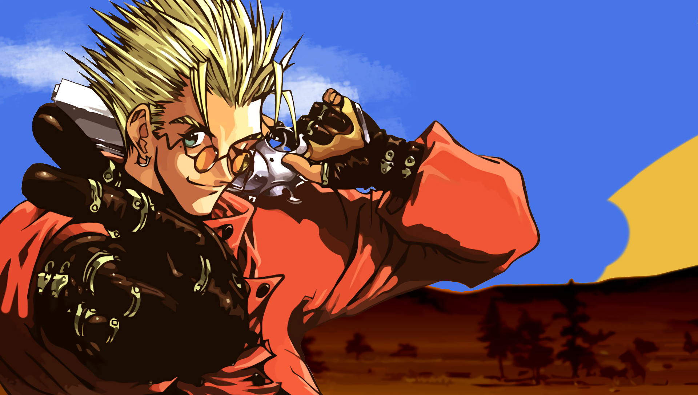

I'm a multimedia and videogame development student passionate about creating interactive and artistic experiences. I love mixing code and creativity to build meaningful projects.
This project is my own take on the horror genre. I modeled and textured all the assets in Blender, and implemented them in Unity 3D using the terrain editor.I also created custom particle systems to generate the fog, and designed a teleportation system to simulate an infinite forest.
A responsive website created with HTML, CSS, and JavaScript, and published using GitHub Pages. In this project, I designed a complete website from scratch about the current state of the space industry. The process involved planning the layout, writing structured content, and implementing interactive elements while ensuring a clean and adaptive design across different screen sizes.
Degree in Multimedia Applications and Video Games
Uvic-UCC Spanish University – 2024 – Present
Degree in video game design and development (not completed)
Udg Spanish University – 2022 – 2024
Completed two years before switching to a broader and more versatile degree program..
I'm a multimedia and video game development student passionate about building creative, interactive experiences.
I enjoy working on every part of a project: from coding and designing to modeling and texturing. I’m always looking to improve and explore new ideas, and I love a good challenge — especially the kind that keeps me learning.
In the future, I’d love to share more of my work through YouTube and connect with others who are into game dev, art, and creativity.
Want to know more? You’ll find my contact info in the resume above!